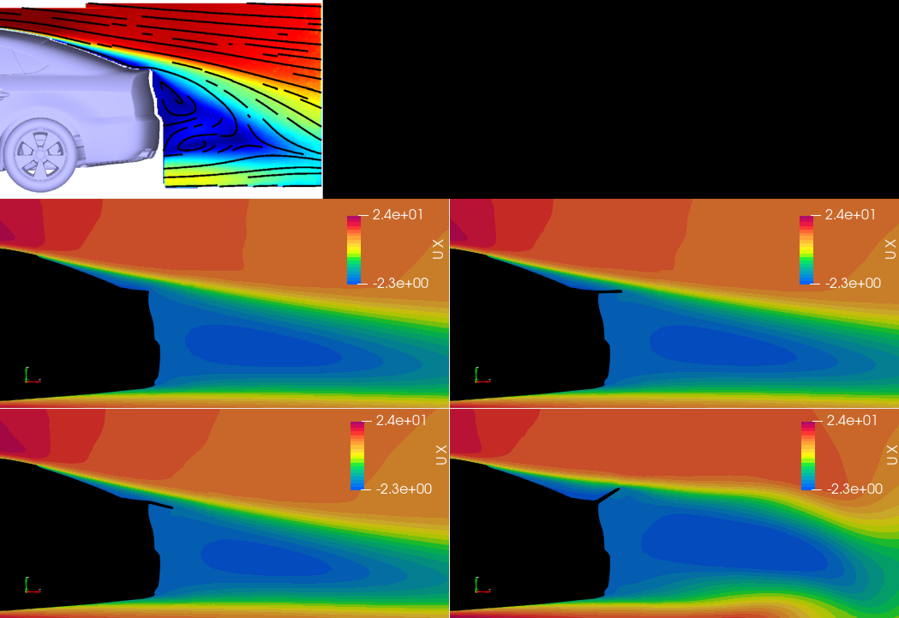
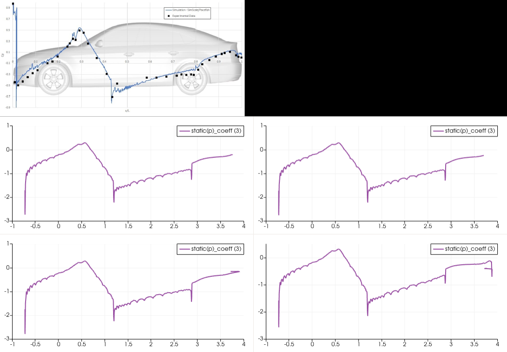
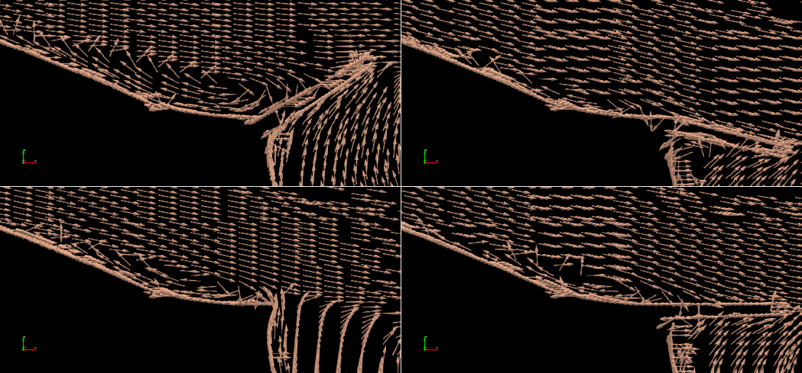
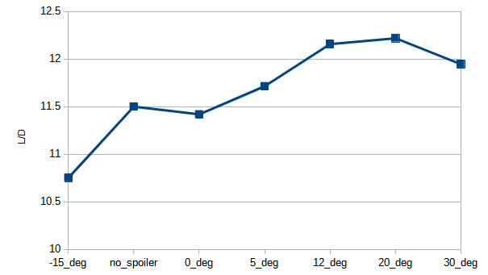
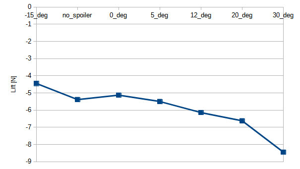
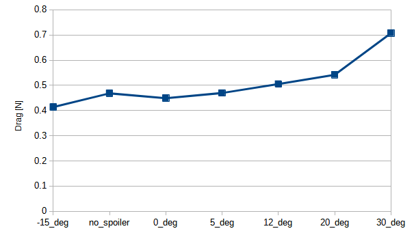

Learnings
Through this study, I refined my expertise in CFD-driven aerodynamic analysis, particularly in control surfaces for vehicle applications. Investigating spoiler-induced flow alterations provided valuable insights into pressure distribution, wake manipulation, and downforce optimization. Additionally, working with OpenFOAM in a resource-constrained setup reinforced my proficiency in open-source CFD simulations. This applied parametric study strengthens my portfolio for roles requiring aerodynamics-driven design solutions in the automotive and aerospace sectors.
Project Gallery





